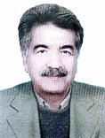

|
|
|
نام: سید عبدالعظیم پویا
سمت : مشاور عالی
تحصیلات: کارشناسی علوم اجتماعی
|
 |
خلاصه سوابق حرفهای
سیدعبدالعظیم پویا در سال 1325 در میبد متولد شد. بعد از گذراندن دوره دبیرستان در سال 1349 در رشته تحصیلی علوماجتماعی از دانشگاه تهران فارغالتحصیل و جهت ادامه تحصیل در رشته جامعهشناسی هنر به کشور فرانسه عزیمت نمود. وی از سال 1360 تا 1378 در وزارت فرهنگ و ارشاد اسلامی به عنوان کارشناس فرهنگی و پژوهشی فعالیت داشته و سپس در سازمان میراث فرهنگی و شرکت آب منطقهای فعالیتهای پژوهشی متعددی را به انجام رسانده است. وی در طول سالهای فعالیت خود به امور پژوهشی و تحقیق در زمینههای اجتماعی مشغول بوده و کتابهای متعددی مانند سیمای باستانی شهر میبد، کتاب زندان سکندر از نگاهی دیگر و پژوهشنامه آبنامه یزد 1379 را در این زمینه تألیف و مقالات ارزندهای را نیز به چاپ رسانده است.
|
- پژوهشگر، محقق و نویسنده
- کارشناس مسائل فرهنگی
- تدریس آموزش و پرورش
|
مهارت های تخصصی و کلیدی
- طراحی مجتمع های آموزشی و دانشگاهی
- پژوهشگر و محقق
- کارشناس مسائل فرهنگی
- کارشناس علوم و روابط اجتماعی
- ارائه مقالات پژوهشی
|

|
منتخب پروژه ها
- هشت پروژه تحقیقاتی درباره مخاطبان فرهنگی تهران
- تأسیس سه هنرستان هنرهای زیبا و پژوهشهای فرهنگی
- مرمت چند بنای فرهنگی تاریخی و تأسیس موزه زیلوهای تاریخی
- تهیه مقدمات موزه سفال و سرامیک
- احیاء آسیاب دو سنگی و همیاری در طرحهای مشابه و تدوین و چاپ چهار اثر فرهنگی در این زمینه
- انجام پروژه مطالعات آب و چاپ جلد اول آن
|

|
سوابق فنی
- مدیر عامل بنیاد میبدی
- عضو انجمن یاوران یادگارهای میبد
- تدریس در سازمان آموزش و پرورش
- دبیر جشنواره هنرهای تجسمی میبد
|

|
|